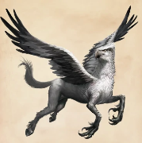

Un hipogrifo es una criatura mágica que tiene las patas delanteras, las alas y la cabeza de un águila gigante y el cuerpo, las patas traseras y la cola de un caballo. Es muy similar a otra criatura mágica, el grifo, con la parte trasera del caballo reemplazando a la parte posterior del león.
La cría de hipogrifos elegantes es una carrera mágica establecida, con criadores conocidos, incluida la madre de Newton Scamander.
